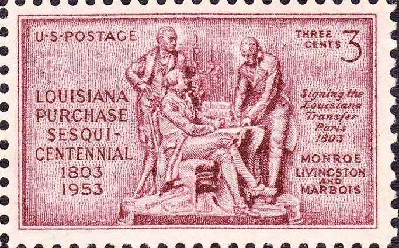
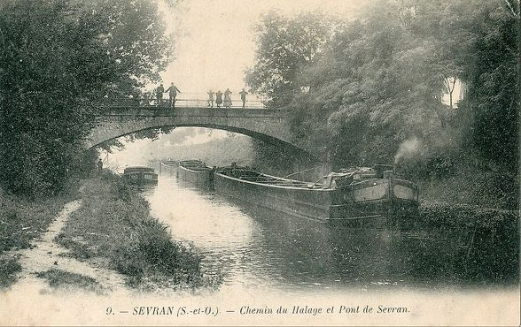
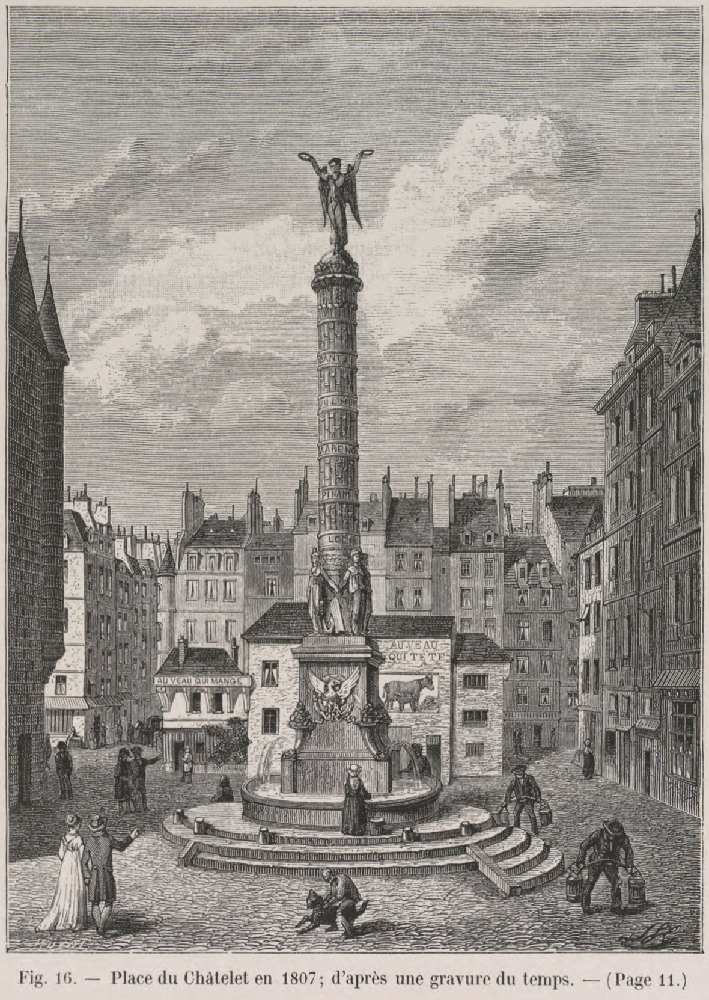
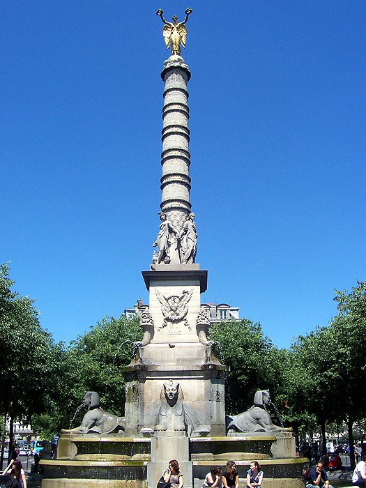
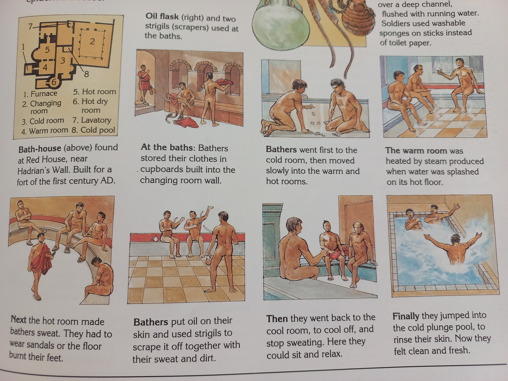
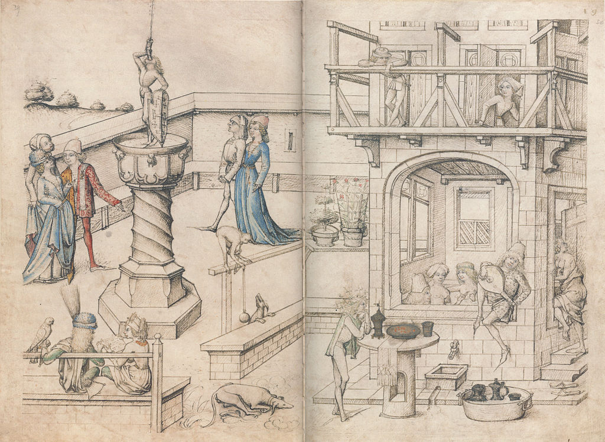
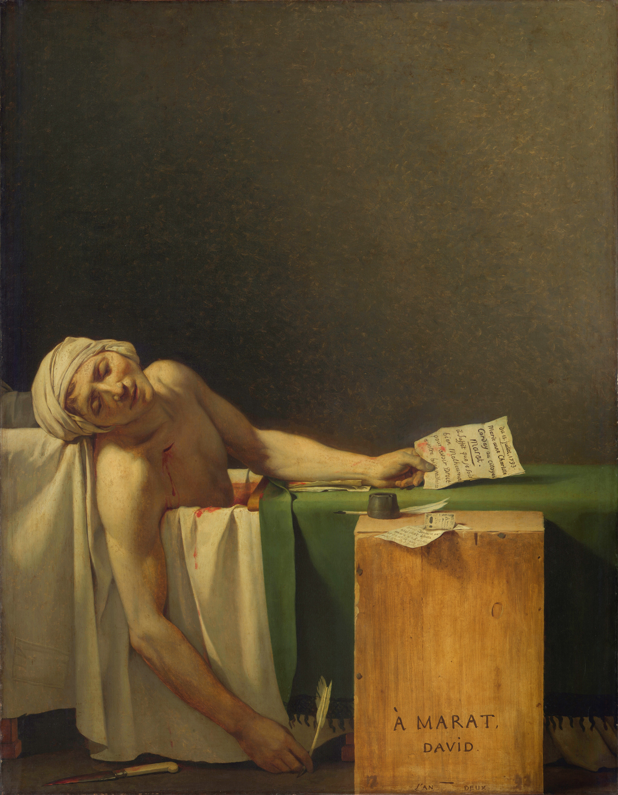
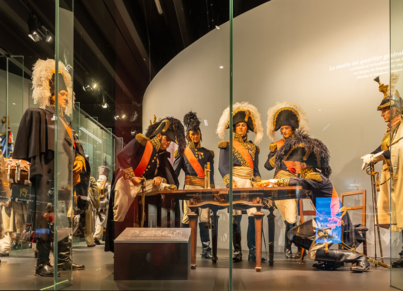
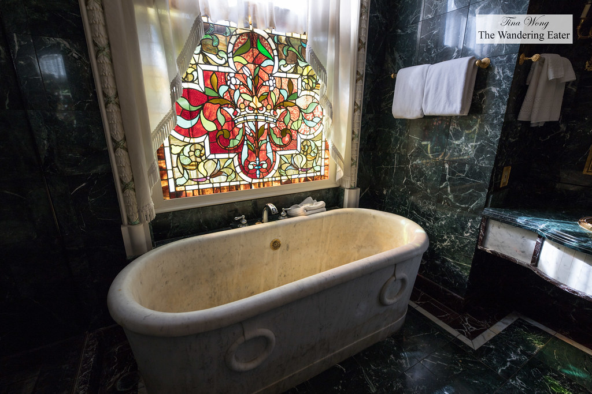

번외편 - 나폴레옹은 영국 호텔에서 왜 목욕을 안 했을까?
게시: 2022-01-24T06:30:39+09:00
지난 편에서 나폴레옹이 바르샤바의 '영국 호텔'(Hôtel d'Angleterre)에 투숙했을 때 목욕은 하지 않고 식사 및 회담만 한 뒤 2~3시간 만에 떠났다고 말씀드렸지요. 기억나시겠습니다만, 그랑다르메의 패잔병들이 길고 고통스러운 행군 끝에 빌나에 입성했을 때, 그 중 재빨리 호텔에 방을 잡았던 사람 중 하나인 그리와(Charles-Pierre-Lubin Griois) 대령도 목욕은 하지 않았습니다. 그가 와인을 곁들인 식사를 배불리 먹고 따뜻한 침대로 기어 들어갈 때, 비로소 장화를 벗었는데 그게 6주만에 처음 그 장화를 벗는 것이었습니다. 그때 발톱 몇 개가 양말과 함께 떨어져 나왔지요. 그렇게 더러운 몸으로 깨끗한 침대에 누웠으니 호텔에서는 매우 싫어했을 것입니다. 왜 나폴레옹도 그리와 대령도 목욕을 하지 않았을까요? 그라와 대령은 잘 모르겠습니다만, 나폴레옹은 목욕 매니아였습니다. 그는 원래 잦은 피부 발진으로 고생했기 때문에, 전쟁터를 돌아다니지 않을 때는 언제나 오후 2시 경 1시간 정도 뜨거운 목욕통 속에 들어가 몸을 불리는 것을 좋아했습니다. 정력적인 행정가였던 그는 목욕통 속에서 낮잠을 자지는 않았고 물 속에 앉은 채 각종 서류를 읽고 결재하거나 신문을 읽었습니다. 그가 당시 프랑스 영토이던 루이지애나 땅을 미합중국 정부에 매각하는 서류에 서명한 것도 그렇게 목욕통 속에 앉아있을 때였다는 말도 있습니다.

(미국에서 발행된 루이지애나 매입 기념 우표입니다. 저기에 보이듯이 매매 현장에서 양도 문서에 서명한 프랑스측 인사는 나폴레옹이 아니라 마르부아(Marbois)였습니다.) 하지만 나폴레옹이 그렇게 목욕 매니아라고 해서 당시 유럽인들이 다 그렇게 깨끗하게 살았던 것은 아니었습니다. 당시 유럽에서 선진 문화를 가진 그룹인 파리 시민들의 경우에도, 1년에 목욕하는 평균 횟수는 2.25회에 불과했다고 합니다. 그럴 수 밖에 없는 것이, 당시 파리는 물 사정이 매우 좋지 않았습니다. 당시 파리의 인구는 60만 정도였는데도, 파리 시민들은 불과 몇 안 되는 시내의 샘 또는 우물에 식수를 의존했습니다. 파리 인구는 100년 전인 루이 14세 때 약 40만이었는데, 그것이 나폴레옹 황제 등극 시에 이미 60만, 그리고 나폴레옹이 퇴위하고난 직후에는 70만으로 불어날 정도로 급속히 팽창했습니다. 이미 오래 전부터 파리를 흐르는 센 강은 인간과 가축의 배설물 등으로 심하게 오염된 상태였기 때문에 식수는 커녕 피부에 닿으면 곤란한 상태의 수질이었습니다. 물 사정이 이렇다 보니, 당시 빠리 시민들의 위생 상태는 가히 바람직하다고는 할 수 없는 상태였고, 대부분의 사람들은 그냥 용변 후 '뒷물' 정도로 위생을 처리했다고 합니다. 따라서 나폴레옹이 황제가 된 직후, 화학자이자 당시 내무부 장관이던 샵탈(Jean-Antoine Chaptal, comte de Chanteloup)에게 '파리를 위해서 뭔가 중요한 일을 하고 싶다'라고 말하자 샵탈이 망설이지 않고 '파리에게 물을 주십시요'라고 말한 것은 무리가 아니었습니다. 나폴레옹은 역대 어떤 프랑스 왕도 해결하지 못한 이 문제를 해결하기 위해 대대적인 공사를 펼칩니다. 나폴레옹이 발주를 낸 많은 파리 개선 공사 중에서 이것이 가장 현실적인 혜택을 많이 주었다고 합니다. 즉, 약 100km 이상 떨어진 우르크(l'Ourcq) 강에서부터 운하를 파서, 그 물을 파리 시내에 식수로 공급했던 것입니다. 이 공사는 1802년부터 계획되어 1804년 실제 삽을 떴고, 1808년 12월 2일 아우스테를리츠 전승 기념일에 그 완공을 선포하기에 이릅니다. 사실은 공사가 덜 완공되어 있었고, 그 후로도 공사는 계속 되었다고 합니다. 아무튼 이 수로 공사는 파리지앵들에게 큰 혜택을 주어, 비로소 물을 풍부하게 쓸 수 있게 되었습니다.

(우르크 운하입니다. 물론 이 운하는 물 공급 뿐만 아니라 뱃길로도 이용되었습니다. 이 운하 건설에는 약 6백만 프랑이 들 것으로 산정되었으나, 실제로는 무려 3천8백만 프랑의 돈이 소요되었습니다. 애초에는 와인에 특별 소비세를 부과하여 그 비용을 충당하려 했으나, 결국 99년간 선박 통행세 징수권을 민간업자들에게 주는 대가로 민간 자본을 끌어들여 완공했습니다.)

(그렇게 끌어들인 물로 파리 시내에 새로 만들어진 공공 급수대 중 하나인 팔미에 샘(Fontaine du Palmier)입니다. 파리 시내 샤틀레 광장(Place du Châtelet)에 있는데 1807년 완공되었습니다.

(팔미에 샘은 당연히 나폴레옹의 온갖 전공을 찬양하는 조각으로 치장되었는데 단치히 포위전, 울름 전투, 마렝고 전투, 피라미드 전투, 로디 전투 등이 묘사되어 있습니다. 지금도 당당히 서있는 이 샘에는 윗 그림 속의 예전 모습과는 달리 입으로 물을 뿜는 스핑크스가 추가되어 있는데, 나폴레옹 3세 시절인 1858년에 추가된 것입니다.) 이렇게 신선한 물이 쏟아져 들어오자, 시민들이 얼마나 좋아했을지는 짐작이 갑니다. 그렇다고 사람들이 이제 매일, 또는 매주 하게 되었느냐 ? 꼭 그렇지는 않았던 것 같습니다. 당시 비평가였던 프티 라델이라는 사람은 이렇게 독설을 퍼부었습니다. "풍부한 물은 처음에는 사용을 조장할 것이고, 그러다가 로마의 목욕탕처럼 오용될 것이다. 자기 집에서 물을 편하게 사용할 수 있는 동양적 사치가 발전되면 결국 도덕적 해이가 일어날 것이다." 당시 유럽인들이 이렇게 잦은 목욕을 싫어했던 이유는 더럽게 사는데 익숙해서 그렇기도 했지만, 라델의 독설에서도 나오듯이 로마의 목욕탕을 향략과 퇴폐의 상징처럼 여긴 탓이 크다고 합니다. 크랏수스가 오늘날 이라크 지방인 파르티아로 원정을 떠나 사막에서 고생할 때, 현지 길잡이가 로마 병사들에 대해 '여기는 이탈리아가 아니라서 행군을 마칠 때마다 술집과 목욕탕이 기다리고 있지 않다'라고 조롱했다고 하지요.

(로마의 목욕탕은 우리의 뜨거운 물이 가득한 목욕탕과는 달리, 증기 사우나로 땀을 뺀 뒤 피부에 올리브유를 바르고 그 땀과 때, 기름을 금속제 도구로 긁어낸 뒤 찬물로 헹구는 형식이었다고 합니다.) 아무리 그렇게 당시 사람들이 목욕을 자주 하지 않았다고 해도, 이렇게 야전에서 한두달 동안 씻지 못한 상태에서 기껏 호텔방을 잡았는데 목욕을 안 한다는 것이 이해가 가지 않지요? 그리와 대령은 몰라도 나폴레옹은 목욕 매니아였는데도 말입니다. 그리와든 나폴레옹이든 호텔에서 목욕을 하지 못한 이유는 목욕통이 없었기 때문이었습니다. 당시 호텔에는 아직 개인 화장실이라는 것이 존재하지 않았습니다. 용변은 당연히 요강(pot de chambre)으로 해결했고, 방에는 기껏해야 주전자와 대야 정도만 있었습니다. 나폴레옹이 묵었던 바르샤바 최고의 호텔 Hôtel d'Angleterre에도 객실마다 목욕통이 설치된 것은 1873년이었습니다. 그럴 수 밖에 없었던 것이, 목욕통만 설치하면 목욕을 할 수 있는 것이 아니었습니다. 당시 건물에는 보일러 같은 것이 전혀 없었기 때문에 온수를 공급할 장치가 없었고, 당시 주방에서 물을 조금씩 끓여서 여러 차례 부어야 그 커다란 목욕통을 채울 수 있었습니다. 게다가 목욕을 마친 뒤 더러워진 물도 일일이 조금씩 양동이로 길어 길바닥에 뿌려서 처리해야 했습니다. 미국에서는 1829년 보스톤의 트레몬트 하우스(Tremont House)라는 호텔이 최초로 목욕통과 함께 비누를 공짜로 제공했습니다만, 이는 이 트레몬트 호텔이 새로 지어진 건물로서 상하수도관이 설치되었기 때문에 가능한 것이었습니다. 유럽의 오래된 호텔 건물에서는 실내 상수도관을 설치하는 것이 쉽지 않았지요. 그렇다면 당시 사람들은 어떻게 목욕을 했을까요? 유럽에서도 대중 목욕탕이 꽤 많았습니다. 러시아 원정에 참전했던 벨로 드 케르고르(Alexandre Bellot de Kergorre)라는 네덜란드 출신의 병참 장교는 동프로이센의 수도 쾨니히스베르크에서 최소한 6개월 만에 처음으로 목욕을 했는데, 대중 목욕탕을 이용했는지 혹은 그가 묵었던 집의 마음씨 좋은 주인이 특별히 자신의 목욕통에 뜨거운 물을 마련해주었는지 모르겠습니다. 그는 이때의 목욕이 평생 겪은 것 중 최고의 사치였다면서 아래와 같이 그 느낌을 적었습니다. "난 내 온 몸이 녹아내리는 것을 느꼈다. 내 몸의 모든 조각 하나하나가 이리저리 비틀어져 있다가 비로소 제자리를 찾아들어가는 느낌이었다. 내 모든 근육, 내 모든 신경 한줄기 한줄기가 움직이고 이완되는 것 같았다."

(15세기 유럽의 대중 목욕탕입니다. 행색을 보면 서민들이 이용하는 곳 같지는 않습니다. 아마도 서민은 아예 목욕이라는 것을, 특히 겨울에는 안 했을 것 같기도 합니다.)
나폴레옹처럼, 신사 계급의 사람들은 자기 집에 목욕통을 두고 거기서 목욕을 했습니다. 다만 요즘처럼 강철로 만들고 겉에 법랑을 입힌 목욕통은 아직 발명되지 않았고, 어지간한 사람들은 나무를 짜맞춘 둥글고 작은 목욕통을 썼습니다. 이런 목욕통에는 린넨 천을 깔아두는 것이 보통이었는데, 거친 나무판의 가시가 엉덩이를 찌르는 것을 방지하기 위함이었습니다. 그래서 다비드가 그린 명화인 '마라의 죽음'(La Mort de Marat)에서도, 마라의 목욕통에는 린넨 천이 깔려 있습니다.

(Jacques-Louis David가 1793년 그린 명작입니다. 그는 뭔가 탄원을 하러 온 샤를롯 코데(Charlotte Corday)를 만난 자리에서 그 여성의 칼에 찔려 죽었습니다. 왜 목욕을 하면서 여성을 만났는지에 대해서는 의문이 들겠습니다만, 당시 마라는 나폴레옹처럼 피부 질환 때문에 거의 대부분의 업무를 목욕통에 앉아서 보았기 때문이며 결코 성희롱 문제는 아니었습니다.) 나폴레옹은 어떤 목욕통을 썼을까요? 물론 나무통은 아니었을 것입니다. 세인트 헬레나 섬에서 그는 구리로 만든 목욕통을 썼고, 이 목욕통은 현재 벨기에의 워털루 전투 기념 박물관에 전시되어 있다고 합니다.

(벨기에 워털루 전투 기념 박물관의 전시물 일부입니다. 사자의 언덕과 함께 우구몽 농가 등이 모두 이 박물관 관리하에 있다고 합니다. 나폴레옹의 구리 목욕통 사진은 못 찾겠더군요.) 튈르리 궁에서 나폴레옹이 쓰던 목욕통도 있을텐데, 진짜인지는 모르겠습니다만 미국 뉴올리언즈에 있는 Le Pavillon Hotel에 그 중 하나가 있다고 합니다. 이건 대리석을 깎아만든 것으로서, 나폴레옹이 쓰던 진품 3개 중 하나를 매입하여 가지고 온 것이라고 하는데, 35만불짜리라고 합니다. 그리고 이 목욕통에서 목욕을 하려면 1천 달러를 내야 한다고 합니다.

(믿거나 말거나, 나폴레옹의 대리석 목욕통입니다.) 끝으로, 나폴레옹은 바르샤바조차 목욕없이 통과할 정도였다면 당시 파리까지 오면서 위생 문제를 어떻게 해결했을까요? 실마리가 있습니다. 12월 7일, 네만 강변의 코브노를 통과할 때 나폴레옹은 코브노의 여관에 잠깐 들러 (목욕은 아닐지라도) 대야에 담긴 물로 여기저기(?)를 대충 씻고 속옷을 갈아 입었습니다. 그가 벗어놓은 속옷과 양말은 그의 마멜룩 시종인 루스탐(Roustam)이 내다버리라고 여관 주인에게 주었습니다. 당시 속옷은 황제나 농부나 모두 거의 동일한 디자인과 재질, 즉 린넨(삼베) 천으로 되어 있었습니다. 부자와 가난한 자의 차이는 딱 하나, 얼마나 깨끗한 것을 입고 있느냐 하는 것이었지요. 세탁 기술이 발전하지 않았던 당시 깨끗한 속옷을 입을 방법은 딱 하나, 입을 만큼 입은 속옷은 그냥 버리는 것이었습니다. 가난한 사람들은 그렇게 귀족들이 버린 속옷도 돈 주고 사서 누더기가 될 때까지 입었지요. 나폴레옹의 속옷은 어떻게 되었을까요? 나폴레옹이 떠나자 코브노의 주민들이 몰려들어 조각조각 낸 뒤 나누어 가졌다고 합니다. 다들 집에 '이것이 나폴레옹이 입었던 속옷이다'라며 가보로 물려주었다고 하네요. Source : 1812 Napoleon's Fatal March on Moscow by Adam Zamoyski
https://pl.m.wikipedia.org/wiki/Hotel_Angielski_w_Warszawie https://en.wikipedia.org/wiki/Fontaine_du_Palmier https://wgno.com/news/entertainment/napoleon-signed-the-louisiana-purchase-in-a-tub-now-you-can-bathe-in-it/ https://www.france24.com/en/live-news/20210505-napoleon-s-bath-meets-its-waterloo http://www.theperfectbath.com/empire-bathtub-inspiration/ https://www.washingtonpost.com/lifestyle/travel/luxurious-hotel-bathtubs-replaced-by-showers/2021/08/19/3f878938-fae9-11eb-943a-c5cf30d50e6a_story.html